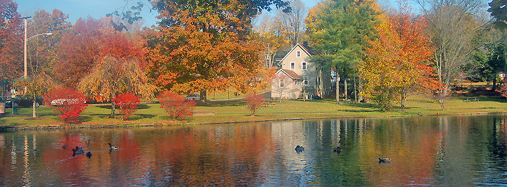
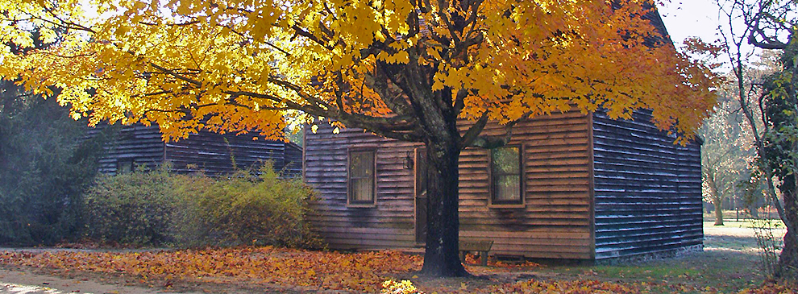
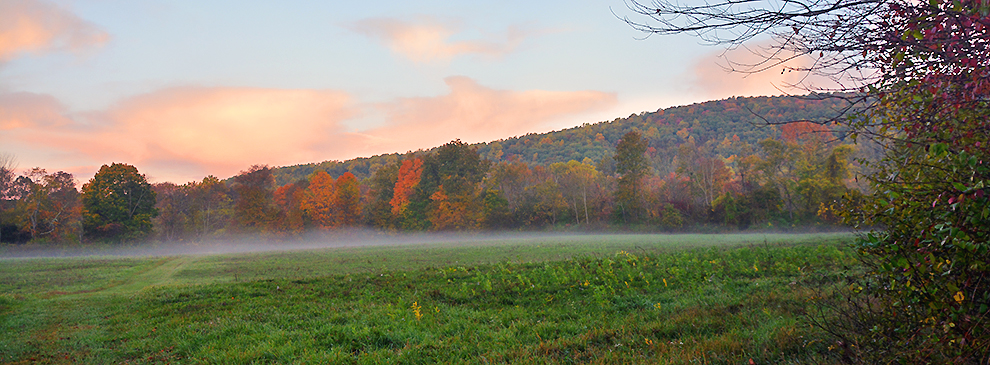

Introducing Statewide Text to 9-1-1 in New Jersey
-
Vibrant Fall Colors Throughout New Jersey Find Peak Foliage Times in NJ!
-
-

The Scenic Peapack Park Peapack, Somerset County, NJ
-

Discover Batsto Village Burlington County, NJ
-

Oxford Mountain Warren County, NJ